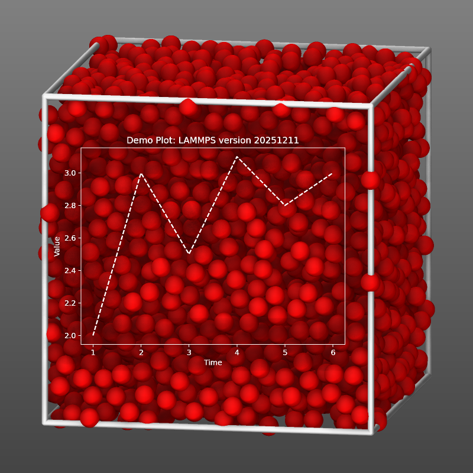

\(\renewcommand{\AA}{\text{Å}}\)
fix graphics/labels command
Syntax
fix ID group-ID graphics/labels Nevery mode keyword args ...
ID, group-ID are documented in fix command
graphics/labels = style name of this fix command
Nevery = update graphics information every this many time steps
zero or more keyword/args groups may be appended
keyword = image or text or colorscale
image filename x y z keyword args = display image in visualization filename = name of the image file x, y, z = position where the center of the image is located in the visualization any of x, y, or z can be a variable (see below) one or more keyword/arg pairs may be appended keyword = scale or transcolor scale value = the image is scaled by this value (default 1.0), can be a variable (see below) transcolor arg = select color for transparency: auto or none or r/g/b auto = uses the color in the lower left corner of the image for transparency none = disables transparency r/g/b = provide three integers in the range 0 to 255 to select transparancy color in RGB color space text labeltext x y z keyword args = display text in visualization labeltext = text for the label, must be quoted if it contains whitespace x, y, z = position where the center of the text is located in the visualization any of x, y, or z can be a variable (see below) keyword = fontcolor or framecolor or backcolor or transcolor or size or horizontal or vertical fontcolor arg = select color for text: white (default) or black or r/g/b white = uses white black = uses black r/g/b = provide three integers in the range 0 to 255 framecolor arg = select color for frame around text: silver (default) or darkgray or white or black or r/g/b silver = uses a very light gray darkgray = uses a very dark gray white = uses white black = uses black r/g/b = provide three integers in the range 0 to 255 backcolor arg = select color for background of the text: silver (default) or darkgray or white or black r/g/b silver = uses a very light gray darkgray = uses a very dark gray white = uses white black = uses black r/g/b = provide three integers in the range 0 to 255 transcolor arg = select color for transparency: silver (default) or darkgray or white or black or none or r/g/b silver = uses a very light gray darkgray = uses a very dark gray white = uses white black = uses black none = disables transparency r/g/b = provide three integers in the range 0 to 255 size value = set the size of the characters (default 24), can be a variable (see below) horizontal = create horizontal text label vertical = create vertical text label colorscale dump-ID titletext x y z keyword args = display a colormap label in visualization labeltext = text for the legend of the colormap label, must be quoted if it contains whitespace x, y, z = position where the center of the colormap label is located in the visualization any of x, y, or z can be a variable (see below) keyword = fontcolor or framecolor or backcolor or transcolor or size or length or tics or map or horizontal or vertical fontcolor arg = select color for text: white (default) or black or r/g/b white = uses white black = uses black r/g/b = provide three integers in the range 0 to 255 framecolor arg = select color for frame around text: silver (default) or darkgray or white or black or r/g/b silver = uses a very light gray darkgray = uses a very dark gray white = uses white black = uses black r/g/b = provide three integers in the range 0 to 255 backcolor arg = select color for background of the text: silver (default) or darkgray or white or black r/g/b silver = uses a very light gray darkgray = uses a very dark gray white = uses white black = uses black r/g/b = provide three integers in the range 0 to 255 transcolor arg = select color for transparency: silver (default) or darkgray or white or black or none or r/g/b silver = uses a very light gray darkgray = uses a very dark gray white = uses white black = uses black none = disables transparency r/g/b = provide three integers in the range 0 to 255 size value = set the size of the characters (default 24), can be a variable (see below) length value = approximate minimal length of the colorscale label tics value = number of tics drawn between the colors of the colorscale label map value = which colormap of the dump to represent: atom (default) or grid or bond horizontal = create horizontal text label vertical = create vertical text label
Examples
fix pix all graphics/labels 100 image teapot.png 5.0 -1.0 -2.0 transcolor auto
fix pot all graphics/labels 100 image teapot.ppm 1.0 v_ypos v_zpos scale v_prog transcolor 19/92/192
fix lbl all graphics/labels 1000 text "LAMMPS graphics demo" 5.0 -1.0 -2.0 backcolor darkgray framecolor black
fix info all graphics/labels 1000 text "Step: $(step) Angle: ${rot}" 5.0 -1.0 -2.0 size 32
fix obj all graphics/labels 200 colorscale viz "Atom Velocity" 20.0 6.5 13.0 size 32 length 1000 &
transcolor none framecolor white backcolor darkgray tics 12
fix bnd all graphics/labels 200 colorscale viz "Bond Strain" 20.0 6.5 -13.0 map bond size 32 length 1000
Description
Added in version 11Feb2026.
This fix allows to add either images or text as “labels” to dump image created images by using the fix keyword. This can be useful to augment images with additional graphics or text directly and without having to post-process the images. The positions can be either interpreted as coordinates in the simulation box or as coordinates in the coordinate system of the image. The selection is made by setting the fflag1 keyword in the dump image fix command (see the “Dump image info” section below). When the positioning uses the coordinate system of the simulation the distance of the graphics objects from the camera is determined from the given z-coordinate and atoms or other graphics objects in the “scene” can be located in front of or behind any image, text or colorscale label. The label is always parallel to the image plane.
When the image coordinate system is used, the labels are always on top, and if two labels are overlapping, the label that is added to the image first will be on top of the other. That order cannot be changed within the same fix, but you can use multiple fix commands and then the order of the fix keywords in the dump image” command line determines the order and thus which label is drawn on top of the other.
The group-id is ignored by this fix.
The Nevery keyword determines how often the graphics data is updated. This should be the same value as the corresponding N parameter of the dump image command. LAMMPS will stop with an error message if the settings for this fix and the dump command are not compatible.
The image keyword reads an image file and adds it to the visualization centered around the provided position and optionally scaled by the provided scale factor. The filename suffix determines whether LAMMPS will try to read a file in JPEG, PNG, TGA, or PPM format. If the suffix is “.jpg” or “.jpeg”, then LAMMPS attempts to read the image in JPEG format, if the suffix is “.png”, then LAMMPS attempts to read the image in PNG format, and if the suffix is “.tga” then LAMMPS will read the file in TGA format. Otherwise LAMMPS will try to read the image in ppm (aka netpbm) format. Not all variants of those file formats are compatible with image reader code in LAMMPS. If LAMMPS encounters an incompatible or unrecognizable file format or a corrupted file, it will stop with an error.
If LAMMPS detects during a run that the file has been changed, it will re-read it. This allows for instance to create a plot using internal LAMMPS data or from processing an output file during the simulation with the matplotlib python module using a python command and fix python/invoke and then embed the resulting image into the dump image output. See below for a minimal example for such a setup.
When using the image keyword, the name of the image file and its position in the “scene” are required arguments. Optional keyword / value pairs may be added:
The scale value determines if the image is scaled before it is added to the dump image output. LAMMPS currently employs a bilinear scaling algorithm.
The transcolor value selects a color for transparency. All pixels in the image with that color will be skipped when the image is rendered. The color is specified as an R/G/B triple with values ranging from 0 to 255 for each channel. There are also two special arguments: auto will pick the color of the pixel in the lower left corner as transparency color and none will disable all transparency processing (this is the default).
The text keyword will process a provided text into a pixmap and adds
it to the visualization centered around the provided position in a
similar fashion as with the image keyword. The requirements for the
text argument are the same as in the fix print
command: it must be a single argument, so text with whitespace must be
quoted; and the text may contain equal style or immediate variables
using the ${name} or $(expression) format. The variables are
evaluated and expanded at every Nevery time step.
When using the text keyword, the text and its position in the “scene” are required arguments. Optional keyword / value pairs may be added:
The size value determines the size of the letters in the text in pixels (approximately) and values between 4 and 512 are accepted. The default value is 24.
There are four color settings: fontcolor or framecolor or backcolor or transcolor. The color can be specified for all of those either as an R/G/B triple with values ranging from 0 to 255 for each channel (e.g. yellow would be “255/255/0”). There are also a few shortcuts for common choices: silver, darkgray, white, black. The default backcolor value is silver.
fontcolor selects the color for the text, default is white
backcolor selects the color for the background, default is silver
framecolor selects the color for the frame around the background, default is silver.
transcolor value selects a color for transparency, default is silver. If this color is the same as any of the other color settings, those pixels are not drawn. Thus with the default settings, the text will be rendered in white without background or frame. The none setting for transcolor disables transparency processing.
When rendering text with transparent background it is recommended to select a similar color but slightly darker or brighter color as background. This will reduce unwanted color effects at the edges due to anti-aliasing.
The horizontal keyword selects creating a horizontal text label (this is the default setting). The vertical keyword selects creating a vertical text label instead.
The colorscale keyword will create a colormap legend indicating the
mapping of values to colors in the dump image
instance with the given dump-ID and adds it to the
visualization centered around the provided position in a similar fashion
as with the image or text keywords. The requirements for the text
argument are the same as in the fix print command: it
must be a single argument, so text with whitespace must be quoted; and
the text may contain equal style or immediate variables using the
${name} or $(expression) format. The variables are evaluated
and expanded at every Nevery time step. The text is shown in the
center of and above the colormap. To the left from the text is the
lower boundary value and to the right the upper boundary value. The
colors are created by a linear interpolation between the lower and upper
boundary value and writing out pixels in the corresponding color. The
fix will receive the actual values from the dump with the given
dump-ID.
Dynamic color maps
When using a dynamic color map with “min” or “max” as the upper or lower range values of the map, the dump will execute only after the fix, and thus the upper and lower boundary values will be those from the previous step where the dump created an image. will be determined every time the fix is executed and the numbers updated accordingly. Thus when adding a colorscale label with this fix it is generally recommended to use a map with a fixed range. This is especially true when creating movies as a fixed range prevents the color scale label to shrink or grow due to the different width of characters.
When using the colorscale keyword, the dump-ID, text and its position in the “scene” are required arguments. Optional keyword / value pairs may be added:
The size value determines the size of the letters in the text in pixels (approximately) and values between 4 and 512 are accepted. The default value is 24. The size (height and width) of the colorbar follows the size of the text.
The length value allows to set a minimal length of the colorscale label. For technical reasons, this is not exactly enforced, but rather a rough approximation that is used to determine the amount of padding in the text.
The tics value determines how many “tics” or lines separating the colors are drawn. This can simplify determining which value a specific color corresponds to.
Added in version 4Jul2026.
The map value selects which of the colormaps of the dump image instance the legend represents. A dump image has separate colormaps for coloring atoms (set with dump_modify amap), grid cells (gmap), and bonds (bmap). The atom setting (the default) selects the atom colormap, grid the grid cell colormap, and bond the bond colormap. If the selected colormap is not actually used to color anything in the corresponding dump image, a warning is printed and the legend will show that colormap’s (unused) default range.
There are four color settings: fontcolor or framecolor or backcolor or transcolor. The color can be specified for all of those either as an R/G/B triple with values ranging from 0 to 255 for each channel (e.g. yellow would be “255/255/0”). There are also a few shortcuts for common choices: silver, darkgray, white, black. The default backcolor value is silver.
fontcolor selects the color for the text, the border of the colorbar and the tics. default is white
backcolor selects the color for the background, default is silver
framecolor selects the color for the frame around the background, default is silver.
transcolor value selects a color for transparency, default is silver. If this color is the same as any of the other color settings, those pixels are not drawn. Thus with the default settings, the text will be rendered in white without background or frame. The none setting for transcolor disables transparency processing.
When rendering text with transparent background it is recommended to select a similar color but slightly darker or brighter color as background. This will reduce unwanted color effects at the edges due to anti-aliasing.
The horizontal keyword selects creating a horizontal colorscale label (this is the default setting). The vertical keyword selects creating a vertical text label instead.
There may be multiple image or text or colorscale keywords with their arguments in a single fix graphics/labels command.
The arguments for the positions of an image or text and the scale factor of an image or the size of a text can be specified as equal-style variables, namely x, y, z, scale, or size. If any of these values is a variable, it should be specified as v_name, where name is the variable name. In this case, the variable will be evaluated each nevery timestep, and its value used to position and resize the image or text. Please see the documentation of the fix graphics/objects command for a more detailed discussion on using variables with graphics objects.
Dump image info
The fix graphics/labels command is designed to be used with the fix keyword of dump image. The fix adds images or text to the visualization.
The color style setting for the fix in the dump image has no effect on either image or text labels. The transparency is by default fully opaque and can be changed with dump_modify ftrans.
The fflag1 setting of dump image fix determines how the coordinates for the location of the center of the image or the center of the text label are interpreted. Setting fflag1 to 0 uses the simulation box coordinate system (x, y, and z) while setting fflag1 to 1 uses the image coordinate system where (0,0) is the location of the lower left corner and (<image width>, <image height>) the upper right corner. In the latter case, the z-coordinate is ignored and the image or label is placed on top of everything.
The fflag2 settings of dump image fix is ignored.
Including a “dynamic” image
The LAMMPS input commands below provide a demonstration for creating and updating a plot during a run and importing it into a visualization. This requires to compile LAMMPS with the PYTHON package and also compile and install the LAMMPS Python module.
The first python command loads the matplotlib and LAMMPS Python modules and configures matplotlib to use the non-interactive ‘agg’ back end for creating image files.
The second python command defines the myplot()
Python function that is supposed to be called regularly during the run
from fix python/invoke. This function has to
accept two arguments, the LAMMPS object pointer and an integer as
required by the fix. The LAMMPS object pointer can be utilized to query
the running LAMMPS instance about internal data. In this example, we
only retrieve the LAMMPS version and add it to the plot title. By
default, plots have an opaque white background and black lines and text.
In order to overlay the plot as a transparent image, all lines and text
are set to use the color white, while backgrounds are set to use a very
bright gray (to minimize anti-aliasing artifacts when deleting the
background pixels).
The two fix commands invoke the python function and read and make the resulting PNG format image available to dump image. The plot is updated only for every 10th dumped image.
The final lines are dump image commands for integrating the generated plot into the visualization of the atom.
python source here """
import matplotlib
matplotlib.use('agg')
import matplotlib.pyplot as plt
from lammps import lammps
"""
python myplot input 2 SELF 0 format pi here """
def myplot(lmpptr, vflag):
lmp = lammps(ptr=lmpptr)
fig, ax = plt.subplots(facecolor=(0.9,0.9,0.9),edgecolor='white')
ax.set_facecolor((0.9,0.9,0.9))
ax.set_title('Demo Plot: LAMMPS version ' + str(lmp.version()) ,color='white')
ax.set_xlabel('Time',color='white')
ax.set_ylabel('Value',color='white')
ax.tick_params(colors='white')
for spine in ax.spines.values():
spine.set_edgecolor('white')
ax.plot([1,2,3,4,5,6],[2,3,2.5,3.1,2.8,3.0],color='white', linestyle='--')
fname = 'myplot.png'
plt.savefig(fname,dpi=180)
plt.close()
"""
fix plot all python/invoke 1000 post_force myplot
fix label all graphics/labels 100 image myplot.png 20.0 9.0 10.0 transcolor auto scale 0.5
dump viz all image 100 image-*.png type type size 800 800 view 80 10 box yes 0.02 &
fsaa yes shiny 0.1 ssao yes 23154 0.8 zoom 1.4 fix label type 0 0
dump_modify viz pad 6 backcolor2 gray backcolor darkgray boxcolor silver
{kind=link}

Example image output for adding the above commands to the melt example.
Restart, fix_modify, output, run start/stop, minimize info
No information about this fix is written to binary restart files.
None of the fix_modify options apply to this fix.
Restrictions
This fix is part of the GRAPHICS package. It is only enabled if LAMMPS was built with that package. See the Build package page for more info.
To read JPEG or PNG format images, support for the corresponding graphics libraries must have been compiled and linked into LAMMPS. Please see the instructions for building LAMMPS with the GRAPHICS package for more information on how to do that.
Default
transcolor = “none” for image and “silver” for text, scale = 1.0, fontcolor = white, backcolor = silver, framecolor = silver, size = 24, horizontal, tics = 0